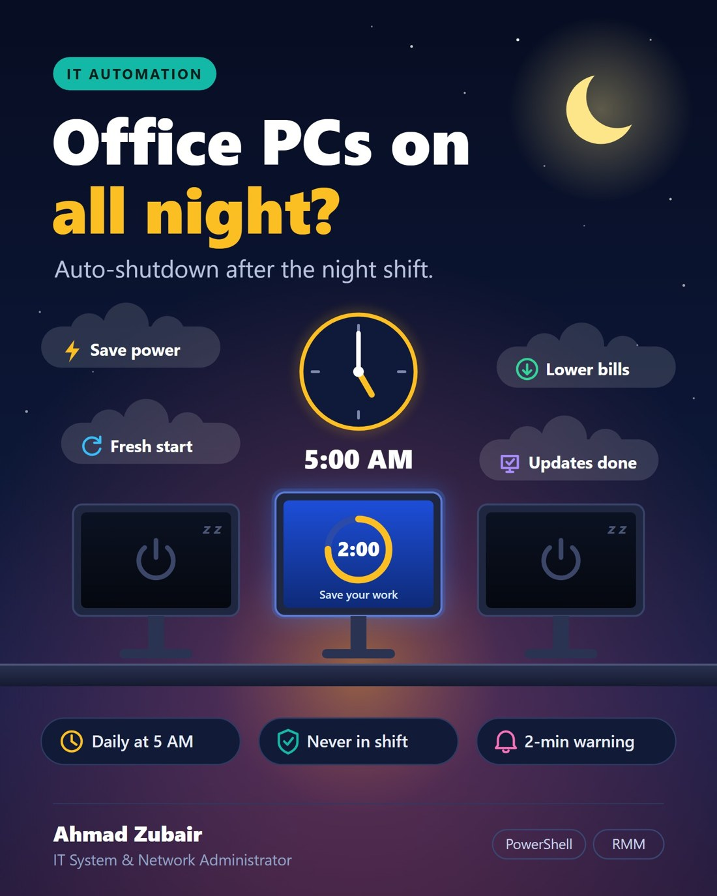
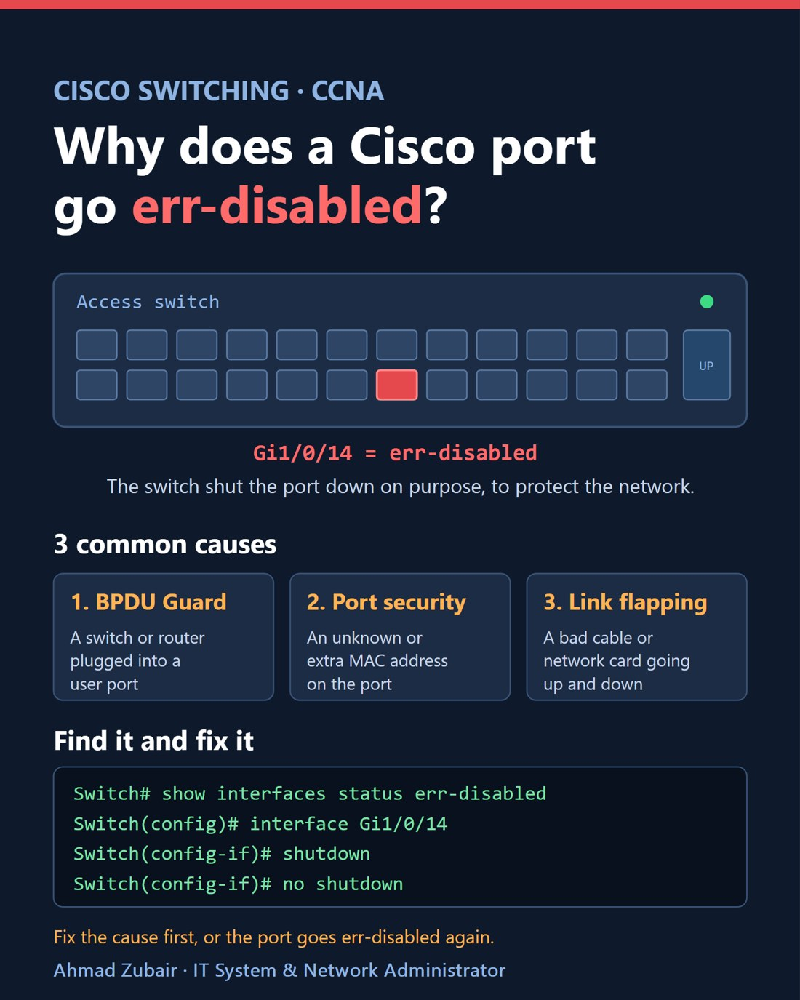
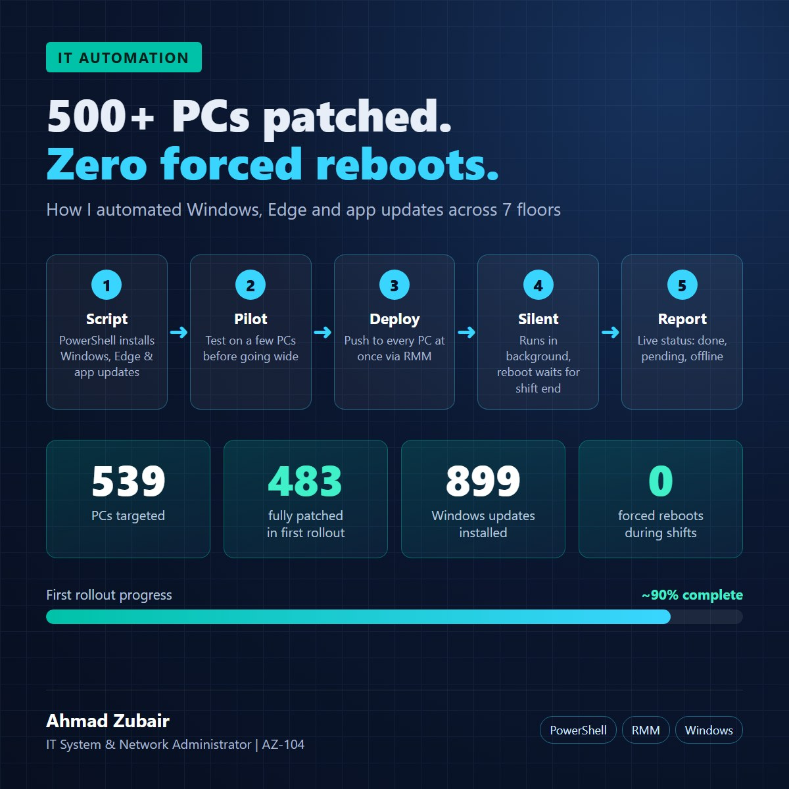

Three things, every day
Keep the network healthy, keep the servers and PCs secure, and automate everything that repeats.
Networks
Cisco Catalyst switching (VLANs, stacks, err-disabled ports), FortiGate firewall with 3 ISP links in SD-WAN, Wi-Fi, ISP coordination.
Systems & security
Windows Server, Active Directory, Group Policy hardening, VMware ESXi, and daily SOC work in Wazuh SIEM.
Automation
PowerShell and Python with the Tactical RMM API: patching, software compliance, clean-up and fleet shutdown that run on a schedule.
Core NOC Console IN PRODUCTION
My own monitoring console for a multi-floor office network. One screen for the core network, alerts in Microsoft Teams, and a one-click fix for the most common switch problem.
Problem: an internet link going down or a switch port going err-disabled was found late, usually when a user called. Fixing a port meant logging in to the switch by hand.
- Checks 29 devices by itself: ping every 30 s, switches over encrypted SNMPv3 every 60 s, the firewall's SD-WAN health through its REST API, Wi-Fi through the controller API.
- Alerts in Teams only when something changes (down, recovered, port err-disabled), so no alert spam.
- One-click fix: re-enables an err-disabled access port over SSH. Trunk and uplink ports are blocked in the code.
- Secure by design: roles (admin, operator, viewer), lockout, audit log, read-only device accounts, VPN-only access, 50+ automated tests.
Built by me, running every week
PowerShell scripts that work through the Tactical RMM API, scheduled with Task Scheduler, with Python turning results into Excel and PDF reports for management.
Weekly IT & security cycle: runs by itself every Wednesday night
Patch automation
Software inventory & compliance
Software policy enforcement
Fleet shutdown after the night shift NEW
Group Policy audit & hardening
Tactical RMM: daily admin + my own home lab
Night security & forensics check



From three internet links to every desk
A multi-floor office network for 700+ staff. I administer it day to day and watch it with my console.
SOC tools I run every day
Wazuh SIEM
Triage high and critical alerts (levels 12–15), vulnerability detections, agent health.
Velociraptor
Endpoint visibility and investigation support.
LibreNMS + Grafana
SNMP monitoring, alerts and dashboards for the network.
PRTG
On-prem network monitoring.
Wazuh, Velociraptor, LibreNMS and Grafana were deployed by our cybersecurity consultant; I have admin access and operate them every day.
From intern to administrator and team lead
IT & Support Intern
Helpdesk tickets, PC setup, software installs, IT inventory.
IT Support Engineer
Helpdesk and ticketing, Wi-Fi access points, VMs on VMware ESXi, onboarding and offboarding, remote support.
IT System & Network Administrator · Team Lead
Network, firewall, servers, Active Directory and Group Policy; leading the IT support team on a night shift.
Automation in production
Weekly patch and compliance cycle, my NOC console and the daily fleet shutdown are all live.
Tools I use and can explain
Networking
Systems
Automation
Security
Microsoft Azure Administrator (AZ-104)
Identity, networking, VMs, storage and monitoring in Azure.
Microsoft 365 lab
Entra ID and Intune: the cloud version of Active Directory and Group Policy.
CCNA
To formalise my Cisco switching and routing skills.
Let's connect
Happy to talk about IT systems, networking, monitoring and automation.